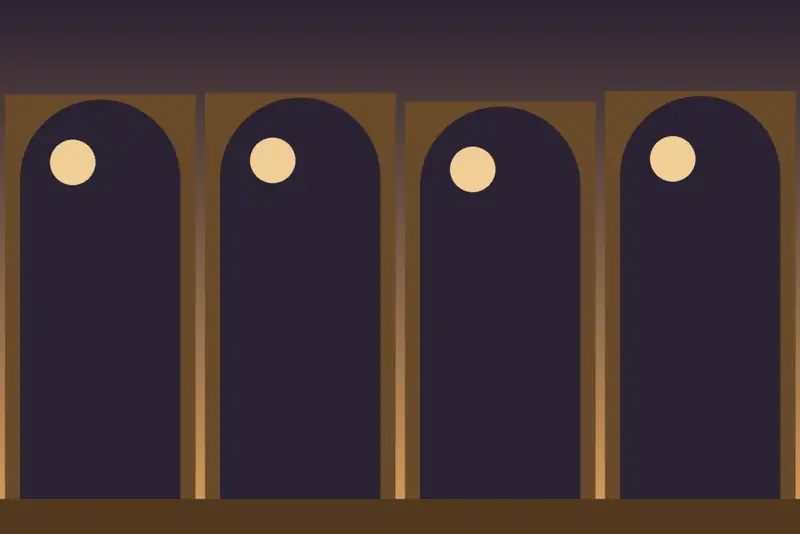
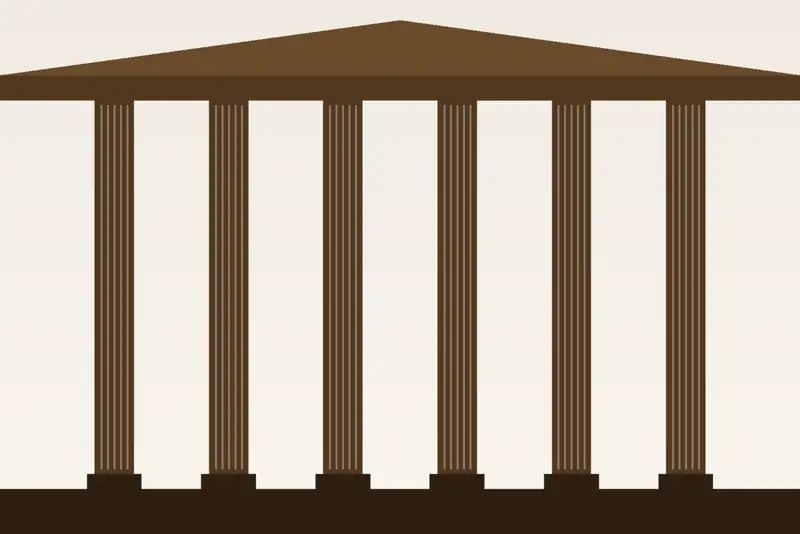
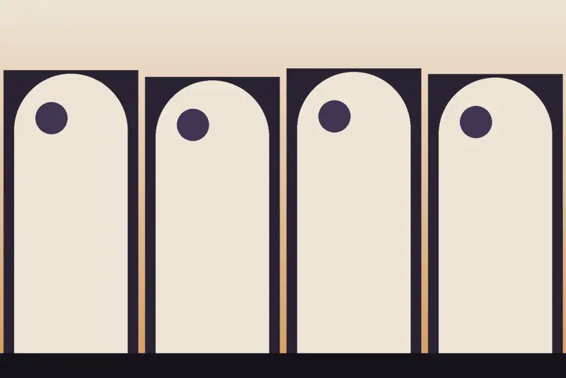
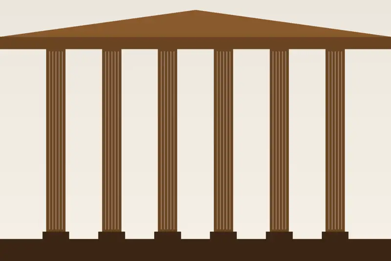
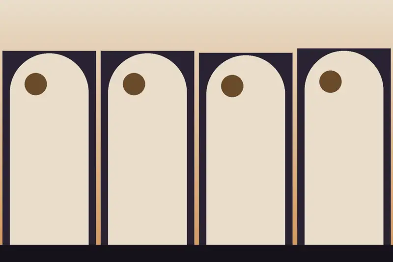

Habitación individual
Para 1 persona, con cama individual. Ideal para viajes de trabajo o estancias en solitario.
Ver disponibilidad →
Habitaciones cómodas y funcionales en pleno centro de Salamanca, para ocio, pareja o trabajo.
28 habitaciones recientemente reformadas, con materiales de calidad y una decoración sencilla, en el corazón de la ciudad: cada rincón se descubre caminando.
Recepción personalizada de 09:00 a 22:00, wifi gratis las 24 horas, consigna de equipaje el último día y vado en la puerta para descargar la maleta.

Individual, doble con 2 camas y de matrimonio. Las imágenes son ilustraciones y no muestran las habitaciones reales.
Para 1 persona, con cama individual. Ideal para viajes de trabajo o estancias en solitario.
Ver disponibilidad →
Doble con 2 camas individuales (máximo 2 personas) o de matrimonio con cama doble. Baño privado, TV, wifi, calefacción y aire acondicionado.
Ver disponibilidad →

En pleno centro de Salamanca; tres parkings a menos de 50 metros y zona de carga y descarga en la puerta.
Plaza Gabriel y Galán 3 · 37005 Salamanca. Check-in de 14:00 a 22:00 y check-out antes de las 12:00.